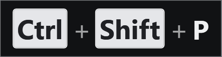
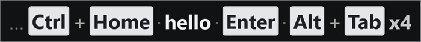
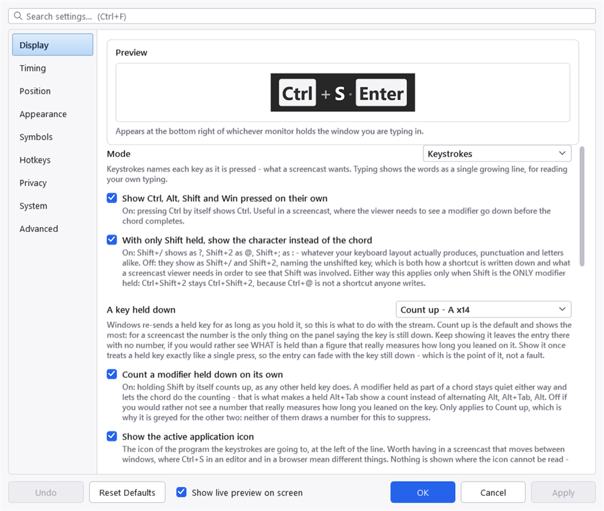

What KeyPressOSD does
KeyPressOSD shows what you press, on screen, at a size somebody can read from across a room.

One chord, in keystrokes mode. Each named key is a cap of its own and the pluses say they were pressed together rather than one after another — the two things a viewer has to be able to tell apart.
It exists for three situations:
- Screencasts and presentations. A viewer cannot see your hands. Without something like this, every shortcut you use is invisible, and "now press Ctrl+Shift+P" has to be said out loud or captioned later.
- Teaching and pair work. The same problem in a room instead of a recording.
- Reading your own typing. If a text field is small, or far away, or the font is not one you can read comfortably, the display can show the line as you type it at whatever size suits you.
It observes input. It never injects any, never modifies what you type, and never gets in the way of a click — the panel is click-through, so the mouse passes straight through it to whatever is underneath.
The two modes
There are two, and they answer different questions.
Keystrokes names each key as you press it: Ctrl + S, Alt + Tab, F5. This is the mode for a screencast, because it says which keys were pressed rather than what they produced. Special keys are drawn as little key caps and typed characters as plain text, which is what makes a line scannable at a glance.

Keystrokes filling the line. The leading ellipsis is the marker for entries that have scrolled off the left, which is off by default — see Showing keystrokes.
Typing shows the words instead, as one growing line. This is the mode for reading your own typing; it says nothing about which keys made the text.
The same keyboard, in typing mode. No caps, no chords, no plus signs — just the words, which is the whole difference between the two modes.
Switch between them from the tray menu, or with Ctrl+Alt+K.
What you see
The display is a rounded panel that appears when you press something and fades out a couple of seconds after you stop. By default it sits in the bottom-right corner of the screen.
In keystrokes mode the entries fill one line, left to right, oldest first. When the line is as long as it is allowed to get, the oldest entries scroll off the left. The panel gets wider as you type and never taller — which is what stops it moving around while you work.
Getting started
There is nothing to configure to be useful. Start it, press something, and it appears.
When you do want to change something, everything is in Settings, reached by right-clicking the tray icon or double-clicking it. The settings that most people change first are on the first two tabs: which mode, how long entries stay, and how big the text is.

Settings, on the Display tab. The search box at the top matches labels and their hint text across all nine tabs, which is usually quicker than knowing which tab a setting lives on.
Where it keeps things
One file, KeyPressOSD.json, beside the executable. It is plain JSON and safe to edit by hand. See The settings file.
Nothing else is written anywhere. No log, no history file, no registry keys beyond the one optional "start with Windows" entry. See Privacy for the full list of what it does not do.
Project on SourceForge ·
Report a problem · MIT licence ·
This manual is generated from docs/manual.